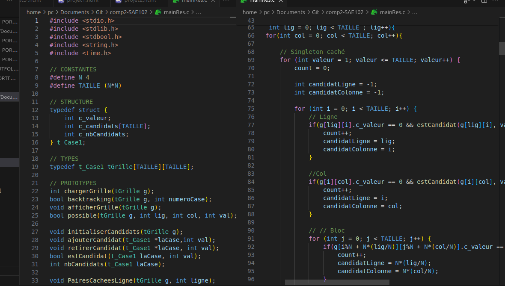

SAE 1.02 \
Résolveur de Sudoku
Optimisation d'Application - Compétence 2
Algorithme de résolution de sudoku de difficultés grandissantes utilisant le langage C - Appréhender, construire et comparer des algorithmes avec méthode
Étapes \
- Prise de connaissance des 2 différentes structues de données
- Implémentation de 4 techniques de résolutions : paires-cachés, paires-nues, singleton caché et singleton-nue
- Préparation de tests unitaires et implémentation backtracking
- Validation des entrées utilisateurs et gestion des erreurs
Traces du Projet \
.C .png
Outils \
- VSCode
- Python